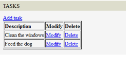
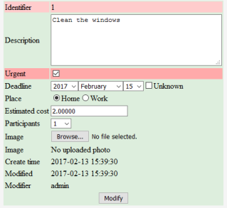

Node
Node is an universal container class provided by CodKep to make it easy for managing different kind of data objects same way. The programmer can specify node types which identified by a "nodetype" string. Once the node type is registered in CodKep the node module provides interfaces for add delete edit or view this typed nodes.
Every node has a node identifier nid which unique between nodes and can used to access the node.
The CodKep provides built-in routes to manage nodes
node/{nid}- View/display nodenode/{nid}/view- View/display nodenode/{nid}/edit- Edit the nodenode/{nid}/delete- Delete the nodenode/{nodetype}/add- Add a new node with thenodetypetype
nodeintype/{nodetype}/{joinid}- View/display node by the type and the type specific identifiernodeintype/{nodetype}/{joinid}/view- View/display node by the type and the type specific identifiernodeintype/{nodetype}/{joinid}/edit- Edit the node by the type and the type specific identifiernodeintype/{nodetype}/{joinid}/delete- Delete the node by the type and the type specific identifier
Examine the CodKep users as example, because the CodKep users are also nodes with node type: user
Accordingly we can create a new users on the following url: node/user/add
The admin user usually got the nid = 1 value.
If so you can edit the admin user data on the following url: node/1/edit
The programmers side the nodes are objects (with Node or Node subclass type) which can be load/save/remove uniform way and the fields of the
defined node type are accessible as object properties. You can get or set these object properties freely.
The changed properties can be stored into database by single save() or insert() method.
You can read about the database appearance later.
Every node can contains data fields which are specified by the type of node. You can set and read this fields as object properties of node.
Create a new user with password from php codes:
$n = node_create('user');
$n->name = 'Sample Sam'; //set the node's name field
$n->login = 'sam'; //set the node's login field
$n->password = scatter_string_local('secret1');
$n->insert();
Fixed properties(fields) of the Node
Every field which defined in the specified node type are accessible as object properties of the node object. Beside this user defined properties the node has same built-in properties which are available in all typed node.
Built-in properties of node object:
(The $node is only a sample object variable here))
- node_nid - (Use:
$node->node_nid)- The
NID(Node IDentifier) of the node. This value is unique in all node and identifies the node without the node type.
- The
- node_type - (Use:
$node->node_type)- The node type. (string)
- node_join_id - (Use:
$node->node_join_id)- The primary identifier of the type specific sql table. This value is unique in the specified node type and identifies the node together with the node type.
- node_creator - (Use:
$node->node_creator)- The login name of the user who creates the node
- node_created - (Use:
$node->node_created)- The timestamp contains the creating time of the node
- node_loaded - (Use:
$node->node_loaded)- This property is
trueif the node is loaded otherwisefalse.
- This property is
- node_preferred_theme - (Use:
$node->node_preferred_theme)- Hold the preferred theme name of the node.
Methods of Node class
Constructor:
- Node($type = 'node') - The constructor (
__construct) of Node- If you do not specify the
$typeparameter or give the'node'value, the node will be uninitialised. It is recommended to usenode_create(),node_load(),node_load_intype()or useNode::getNodeInstanceByType($type)static function to create a node instance instead of directly call this constructor.
- If you do not specify the
Static methods:
- Node::load($nid = NULL,$trunk = false)
- Load the node from database by NID.
- Static method, returns an appropriate Node or Node descendant if success.
- Node::load_intype($join_id,$type)
- Load the node from database by TPYE and JOIN_ID.
- Static method, returns an appropriate Node or Node descendant if success.
- Node::getNodeInstanceByType($type)
- Creates a Node (or Node descendant) object according to the $type parameter.
- Static method, returns an appropriate Node or Node descendant if success.
Methods:
- save($skip_transaction = false)
- Save the node to the database.
- This method does not check the permissions to do the desired operation. I does the operation regardless of node or caller permissions.
- If the
$skip_transactionparameter is true the method does not start and commits a new sql transaction.1
- save_checked($skip_transaction = false)
- Save the node to the database.
- This method check if the caller have the required permission to do the desired operation on a node. If not, an error raised and the appropriate hook activated.
- If the
$skip_transactionparameter is true the method does not start and commits a new sql transaction.1
- insert($skip_transaction = false)
- Insert this node to the database.
- Returns the NID of the created node.
- This method does not check the permissions to do the desired operation. I does the operation regardless of node or caller permissions.
- If the
$skip_transactionparameter is true the method does not start and commits a new sql transaction.1
- insert_checked($skip_transaction = false)
- Insert this node to the database.
- Returns the NID of the created node.
- This method check if the caller have the required permission to do the desired operation on a node. If not, an error raised and the appropriate hook activated.
- If the
$skip_transactionparameter is true the method does not start and commits a new sql transaction.1
- remove($skip_transaction = false)
- Remove the node from the database.
- This method does not check the permissions to do the desired operation. I does the operation regardless of node or caller permissions.
- If the
$skip_transactionparameter is true the method does not start and commits a new sql transaction.1
- remove_checked($skip_transaction = false)
- Remove the node from the database.
- This method check if the caller have the required permission to do the desired operation on a node. If not, an error raised and the appropriate hook activated.
- If the
$skip_transactionparameter is true the method does not start and commits a new sql transaction.1
- getform($mode = 'all')
- Generate a HtmlFrom object
- The
$modeparameter is directly passed to SpeedForm'sgenerate_form()
- view()
- Generated html codes to view the node.
- Returns html codes.
- definedFields()
- Returns an array containing the names of defined fields.
- get_display_value($fieldname)
- Returns the display value of a specified field. You can always get the value of a field by the field name as property but some fields (like the txtselect, numselect, sqlchoose) holds a key value not the display value referenced by the key. You can get the desired display value with this function. Most cases (like field type smalltext and largetext) this function directly pass the value.
- get_display_for_external_value($fieldname,$value)
- Returns the display value of a specified field for the passed value.
- get_field_attribute_value($fieldname,$attributename)
- The function returns an attribute of the specified field of the node according to the
$fieldnameand$attributenameparameter. Returnsnullif not found.
- The function returns an attribute of the specified field of the node according to the
- get_speedform_object()
- Returns the backend SpeedForm object of the node.
- &get_definition_root()
- Returns a reference to the data definition array root of the node.
- &get_definition_field($sqlname)
- Returns a reference to the data definition array's appropriate field definition.
Note 1: By default the save, insert and remove methods do their sql works in a separate sql transaction. They starts a transaction inside and commits after the work. In case you would like to call this methods in an already started transaction (to enclose the whole of your work included this opertaion in a large transaction) you have to set the $skip_transaction parameter to true.
Methods which does nothing (or do a minimal basic operations) in Node class. They can redefined in subclasses to achieve some special functions. See custom node object chapter:
- m_initialized()
- Called after the node constructor finished. (Use this instead of your own constructor)
- m_after_loaded()
- Called immediately after node loaded from the database.
- m_before_insert()
- Called immediately before node inserted to the database.
- m_after_insert()
- Called immediately after node inserted to the database.
- m_before_save()
- Called immediately before node saved/updated in the database.
- m_after_save()
- Called immediately after node saved/updated in the database.
- m_before_delete()
- Called immediately before node deleted from the database.
- m_before_form($op)
- Called immediately before node's from generated.
- The returned text will be prepend to the node view/create/edit/delete form.
- The value of
$opcan beview,add,edit,delete
- m_after_form($op)
- Called immediately after node's from generated.
- The returned text will be append to the node view/create/edit/delete form.
- The value of
$opcan beview,add,edit,delete
- m_form_code_generation($form,$ro)
- Generates the html codes from the (previously generated)
$formobject with the appropriate$ro(readonly) mode. (By default it does:return $form->get($ro);)
- Generates the html codes from the (previously generated)
Helper functions of node class
node_create($type)
Create and return an "empty" node with a specified node type.
The returned node can be inserted to the database after the properties is set.
// Create an empty node and filled with values
$n = node_create("task");
$n->description = "Do something";
$n->cost = 22;
$n->deadline = "2017-02-11";
//Saved to the database and prints a node view link
$nid = $n->insert();
print "The task is saved, see:" . l('View','node/'.$nid);
node_load($nid)
Load and return the node from the database by NID.
It returns the appropriate node object if success, otherwise null;
//Loads a node by NID
$n = node_load($nid);
//Increase the "value" by 10
$n->value = $n->value + 10;
//Save to the database
$n->save();
node_load_intype($join_id,$type)
Load and return the node from the database by NODETYPE and JOIN_ID.
It returns the appropriate node object if success, otherwise null;
//Print the name of the user $uid
$u = node_load_intype($uid,'user');
print "The name of the user is " . $u->name;
node_delete($nid)
Delete the specified node.
sql_table_of_nodetype($type)
Returns the sql table creation string of the node (CREATE TABLE)
node_get_definition_of_nodetype($type)
The function returns the data definition structure of the node type in $type parameter.
Returns null if not found.
node_get_field_array($type,$sqlname)
The function search and returns the definition array part of the field of the node type in $type
parameter according to the $sqlname parameter. Returns empty array if not found.
node_get_field_attribute($type,$sqlname,$attributename)
The function search and returns the specified attribute of specified field of the node type in $type
parameter according to the $sqlname and $attribute parameter. Returns null if not found.
node_get_field_display_value($type,$sqlname,$value)
The function converts the $value parameter to a display value in node type $type
in field $sqlname. Returns the passed value unchanged if not success.
Defining a node
CodKep modules can define node types by HOOK_nodetype hook.
In case you intent to define a new node type, you have to implement HOOK_nodetype in your module and return
a SpeedForm's data definition structure array
with the index name of the defined node type string.
Note: You can also use the SpeedForm builder to assemble this node definition array.
An example, which define the "sampletype" node type in "mymodule" module:
function hook_mymodule_nodetype()
{
$d = [];
$d['sampletype'] = [
"name" => "samplenode",
"table" => "sample",
"show" => "table",
"rest_enabled" => "crudl", //Enable full REST api
"fields" => [
10 => [
"sql" => "id",
"type" => "keyn",
"hide" => true,
],
20 => [
"sql" => "name",
"text" => "Name",
"type" => "smalltext",
"check_noempty" => "Cannot leave empty",
"color" => "#ddddff",
],
100 => [
"sql" => "add_btn",
"default" => 'Add',
"type" => "submit",
"in_mode" => "insert",
"centered" => "yes",
],
],
];
return $d;
}
The detailed documentation of data definition structure array is located here.
The index number of the fields are influence the sort of the fields. (The fields are sorted ascending before using)
Note: A defined node is automatically registers the necessary sql schema requirements, so after defining a node type or alter something it is strongly recommended to revisit the CodKep's sql schema check page to meet the possible new requirements. The schema editor page in documentation.
Note2: After you created a new node type you also have to specify the permissions of users on this node type. See this chapter
Dynamic node definition
Your site may use many node types, which uses a lots of resources to load. Usually a page load does not use all node types defined by your modules. To save loading time the node module has a dynamic node type loading method, which only loads the necessary definitions. You can put each node type definition to separated files, and the CodKep only loads the necessary file if the specific node type is used. This subsystem uses php spl_autoload_register function.
How to define nodetypes dynamically:
- Write the data definition structure of the node type in a separate file as a static property of an arbitrary class with name "definition"
- Use
HOOK_objectnodetypehook to specify the class name and the file where the node type is defined.- The
HOOK_objectnodetypehook has to return an associative array where the key is the name of the node type and the value is an another associative array with two key-value pair:"defineclass" = CLASSNAME- The CLASSNAME where the definition is located in the$definitionstatic property."file" = FILENAME- The FILENAME where the class definition is located.
- The
In case the Node module requires the definition of the node type it loads the class from the specified file.
Let's see the dynamic definition example of "tool" node type:
function hook_mymodule_objectnodetype()
{
$r = [];
$r['tool'] = [
'defineclass' => 'ToolNode',
'file' => 'site/definitions/ToolNode.php'
];
return $r;
}
The site/definitions/ToolNode.php file (part):
// This class can be a sublcass of any class, it does not matter in case of definition.
class ToolNode
{
public static $definition =
[
"name" => "tool_def",
"table" => "tools",
"show" => "table",
...
];
}
Derive node definition from another node
You can reuse the definition of another node and use as base to a new defined one.
To do this you have to set the top level base attribute to the derived node's name.
All options/values of the base definition will exists in the defined one.
The values of the base and the current defined structure are merged with the priority of the new values.
You can use an additional fields-by-sql top level associative array which a helper field to enables you modify
the derived fields without knowing the index of the field.
This associative array is similar to fields where the indexes are not numbers but sql names.
function hook_mymodule_nodetype()
{
return [
'poweredtool' => [
'base' => 'tool', //definition derived from "tool" node
'table' => 'poweredtools', //change the sql table name to "poweredtools"
'name' => 'poweredtool', //change the name
'fields' => [ //Adds a new field
25 => [
'sql' => 'powerreq',
'text' => 'Required power',
'type' => 'smalltext',
'color' => '#ffaaaa',
],
],
'fields-by-sql' => [ //Modify an attribute of a derived field
'name' => [
'text' => 'Names of the powered tool',
],
],
],
];
}
Note: The derived definition are not calculated (merged) at CodKep start when the node types are loaded. The merging is only processed when the derived node's definition structure is needed. For example you do a node_load() on a derived node.
Modify existing node types
The node module provides the HOOK_nodetype_alter_NODENAME($obj,$reason) hook
which can alter the already defined node types.
You have to substitute the desired node type with NODENAME word in hook name.
This hook receives an object which contains a reference to the data definition structure modifiable way.
The reason parameter can be "loaded" or "assembled".
If the $reason is "loaded" the hook is activated when the specified node type is loaded.
In case of the specified node type has a derived definition array (Assembled on a base of an another node) the
HOOK_nodetype_alter_NODENAME is call again when the base definition is merged with the subject definition.
This case the $reason parameter is "assembled".
The merge process only executed when it is needed. (The subject node type is used)
Let's see an example code where we add an email field to the CodKep's built in user node type:
function hook_mymodule_nodetype_alter_user($p,$reason)
{
$p->def['fields'][55] = [
'sql' => 'email',
'text' => 'E-mail',
'type' => 'smalltext',
'par_sec' => 'text5',
];
}
Note: After implementing this hook you have to visit the sql schema check page to meet the new sql requirements.
Show the defined node types
You can get a compact table about the defined static and dynamic node types by accessing
codkep_definednodes path.
The table shows the node names, class types, external sql table names,
primary keys and the define file in case of dynamic node.
By default this page is only accessible for site admins.
See the node settings below to expand or narrow this accessibility.
Database appearance of nodes
The nodes are represented by two separate sql tables in the sql database.
One of them is the common "node" table which holds the common properties of nodes and the required data
to join to the second table which is depends on node type and holds the data of the fields.
The second table name is specified by the data definition structure and different in every node type.
The primary key of the type specific SQL table is located in the join_id field of the node table:
mysql> select * from node;
+-----+----------------+---------+--------+-------------------+---------------------+
| nid | type | join_id | ptempl | creator | created |
+-----+----------------+---------+--------+-------------------+---------------------+
| 1 | user | 1 | NULL | <unauthenticated> | 2017-01-24 09:34:27 |
| 2 | user | 2 | NULL | admin | 2017-01-24 09:35:22 |
| 3 | task | 1 | NULL | dave | 2017-01-24 09:41:07 |
| 4 | task | 2 | NULL | dave | 2017-01-24 09:42:21 |
+-----+----------------+---------+--------+-------------------+---------------------+
4 rows in set (0.00 sec)
It means that there is two way to identify a node:
- by NID
- Node can load with
$node = node_load($nid);
- Node can load with
- by JOIN_ID and TYPE where the JOIN_ID is the primary identifier of the table.
- Node can load with
$node = node_load_intype($id,$type);
- Node can load with
Querying node lists from database
The CodKep has a general database CRUD interface which helps to build database operations. The node module extends this interface to customize it for node queries.
Helper function to query nodes:
node_query($nodetype)
This function receives a $nodetype textual parameter which the type of the node to query.
- The function will set the container table of node to query.
- Joins the node table appropriate way to reach node fields.
- Adds the base node fields to the queried fields:
node_nidThe node identifiernode_typeThe node typenode_join_idThe joined id
The function returns a DatabaseQuery object so that all methods can be used to extend the database query. Let's see an example where we search all users who's name is started by "A" letter.
$results = node_query("user")
->get("name")
->cond_fv("name","^A","regex")
->execute_to_arrays();
foreach($results as $res)
{
print l($res["name"],'node/'.$res['node_nid']) . " user found. <br/>";
}
Node access control
You can control the access of the nodes by implementing hooks.
The HOOK_node_access($node,$op,$account) can control of the access of any type of node while
the HOOK_node_access_NODETYPE($node,$op,$account) only controls the access of a specified node type.
Both hook receives same three parameters:
$nodeThe examined node object. The system queries the permissions for this node.$opThe system queries the permission for this operation. Possible values are:"create""precreate"(On loading the empty form to get the user input before create)"delete""update""view"
$accountDetermine the permission of this account (user node)
The hook have to return one value of these defines:
NODE_ACCESS_IGNORE- Ignore the answerNODE_ACCESS_ALLOW- Allow the operation specified by parametersNODE_ACCESS_DENY- Deny the operation specified by parameters
In case there is no any permission set hook in the system or received only the NODE_ACCESS_IGNORE value the system will deny every request except the following default allowed:
- Allows everything for admin users.
- Allows to view and precreate for everyone. (It can disabled anytime by sending NODE_ACCESS_DENY from a node_access hook.)
Note1: The NODE_ACCESS_DENY is always stronger than NODE_ACCESS_ALLOW, if both received the result will NODE_ACCESS_DENY
Note2: The node permissions are only checked when the users access nodes by the Node module's UI. There is no permission check if a node accessed from program code!
Note3: The precreate $op is used when the system show an empty form to the user to fill before create a node.
In case you allow precreate and deny create the user can fill an empty form but cannot insert it when submitted.
The other case you deny precreate the user neither can load the empty form.
Samples:
//Allow everything on every node type for administrator
function hook_mymodule_node_access($node,$op,$account)
{
if($acc->auth && $acc->role == ROLE_ADMIN)
return NODE_ACCESS_ALLOW;
return NODE_ACCESS_IGNORE;
}
//Allow add/edit/delete of "news" node for editors but view only for others
function hook_mymodule_node_access_news($node,$op,$acc)
{
if($op == 'view')
return NODE_ACCESS_ALLOW;
if($acc->auth && $acc->role >= ROLE_EDITOR)
return NODE_ACCESS_ALLOW;
return NODE_ACCESS_DENY;
}
The node_access function
node_access($node,$op,$account)
Calculate the permission of the operation on the node of the parameter passed account.
(It's call the HOOK_node_access in background.)
$nodeDetermine the permission on this node$opDetermine the permission for this operation. Possible values are:"create""precreate""delete""update""view"
$accountDetermine the permission of this account (user node)
The return value of this function can be:
NODE_ACCESS_IGNORENODE_ACCESS_ALLOWNODE_ACCESS_DENY
REST api for nodes
The CodKep can provide an automatic working REST interface for nodes
which can provide full CRUD
for the defined node types without any coding work.
To enable REST for a node type you have to do the following:
- Make sure you not disabled the
$site_config->node_rest_api_enabledvariable in site settings. If this variable isfalsethe REST interface is completely disabled. Otherwise this is enabled by default, so probably you don't have to do anything. - Make sure you set
rest_enabledtop level attribute of the node type you want to enable the REST in data definition structure array. This attribute is a string where every character in a string is a REST command to enable:c- Enable create of node with the specified type- Enables "
POST /restapi/createnode/{nodetype}"
- Enables "
r- Enable read of nodes with the specified type- Enables "
GET /restapi/node/{nid}" - Enables "
GET /restapi/nodeintype/{nodetype}/{joinid}"
- Enables "
u- Enable update of nodes with the specified type- Enables "
PUT /restapi/node/{nid}" - Enables "
PUT /restapi/nodeintype/{nodetype}/{joinid}"
- Enables "
d- Enable delete of nodes with the specified type- Enables "
DELETE /restapi/node/{nid}" - Enables "
DELETE /restapi/nodeintype/{nodetype}/{joinid}"
- Enables "
l- Enable list of nodes with the specified type- Enables "
GET /restapi/nodelist/{nodetype}/{start}/{limit}"
- Enables "
- By default the
rest_enabledattribute is not set so no REST command is allowed for any node type without this settings. - To enable all REST commands you should set
"rest_enabled" => "crudl" - To enable only the read and update REST commands you should set
"rest_enabled" => "ru" - To disable every rest command on the node type just leave the
rest_enabledblank or completely ignore the settings.
Node related REST commands
These node related REST interfaces receives JSON data, and answers with JSON too.
POST /restapi/createnode/{nodetype}- Create a new node with thenodetypetype by the posted JSON
GET /restapi/node/{nid}- Get node data in JSONPUT /restapi/node/{nid}- Modify node data by the posted JSONDELETE /restapi/node/{nid}- Delete the node
GET /restapi/nodeintype/{nodetype}/{joinid}- Get node data in JSONPUT /restapi/nodeintype/{nodetype}/{joinid}- Modify node data by the posted JSONDELETE /restapi/nodeintype/{nodetype}/{joinid}- Delete the node
GET /restapi/nodelist/{nodetype}/{start}/{limit}- Get node type item count and NID list
All rest command returns application/json and the create/update commands also requires json data to post.
All node operations done through REST is processed by node access system. It means that you have to provide the necessary permissions to done the desired operations.
You can skip some fields of nodes from the REST operations by set the field's no_rest attribute.
See the common field attributes of data definition structure.
You can see here a client side javascript function which create a task node through REST interface:
function create_task(description,cost,deadline)
{
var newtask = new Object();
newtask.description = description;
newtask.cost = cost;
newtask.deadline = deadline;
jQuery.ajax({
url: 'index.php?q=/restapi/createnode/task',
method: 'POST',
dataType: 'json',
data: JSON.stringify(newtask),
contentType: 'application/json',
context: document.body,
error: function(e) {
alert('Error: The task is not created');
},
success: function(data) {
alert('Task node created with nid: ' + data.node_nid );
}
});
}
create_task("Do something",22,"2017-02-11");
Note: If you need CORS
(Cross-Origin Resource Sharing) in the built-in rest services you need to set
the $site_config->cors_requests_enabled_hosts variable in site settings.
In your own rest callbacks you also need to call the core_set_cors_headers() function to set the needed CORS headers.
A complete example
In this example we will create a "task" node type and an additional interface with some customisation. So the example will do:
- Define a 'task' node type. Go to the code...
- Specify the permissions of the 'task' nodes. Go to the code...
- Create a listing interface of 'task' nodes. Go to the code...
- Extend the node interface of the 'task' node. Go to the code...
- Set some redirection after operations (Add,Modify,Delete) Go to the code...
|
(3) The list of tasks:  |
(1,3) View/modify of a task:  |
This code define the 'tasks' url and place it to the main menu:
(See routes and menu)
function hook_mymodule_defineroute()
{
$r = [];
$r[] = [
'path' => 'tasks',
'callback' => 'tasks',
];
return $r;
}
function hook_mymodule_before_start()
{
global $site_config;
$site_config->mainmenu["Tasks"] = "tasks";
}
Under the 'tasks' url a callback generates the list of task and an 'Add', 'Edit' and 'Delete' links:
(See query formatter)
function tasks()
{
global $user;
ob_start();
print l("Add task","node/task/add");
print '<br/>';
$c = [
'#tableopts' => ['border' => '1'],
'#fields' => ['descr','mod','del'],
'descr' => ['headertext' => 'Description',],
'mod' => [
'headertext' => 'Modify',
'valuecallback' => function($r) {
return l('Modify','node/'.$r['nid'].'/edit');
}
],
'del' => [
'headertext' => 'Delete',
'valuecallback' => function($r) {
return l('Delete','node/'.$r['nid'].'/delete');
}
],
];
$r = sql_exec(
"SELECT tid,nid,descr,task.type,task.created ".
"FROM task INNER JOIN node ON node.join_id=task.tid AND node.type='task' ".
"ORDER BY task.created");
print to_table($r,$c);
return ob_get_clean();
}
The following codes specifies the permissions of the task node: All authenticated user can create/edit/delete them.
function hook_mymodule_node_access_task($node,$op,$account)
{
if($account->auth)
return NODE_ACCESS_ALLOW;
return NODE_ACCESS_DENY;
}
The 'task' node type contains an 'imgshow' static field which shows the uploaded photo embed in editor table if exists. This hook will hide this image field on insert and shows the photo image in other cases if exists. (Note that the 'img' field contains the file reference while the 'imgshow' is only a static text which displayed to the user.)
function hook_mymodule_node_before_action($node,$op,$acc)
{
if($node->node_type == 'task')
{
if($op == 'add')
{
$node->get_definition_field('imgshow')['hide'] = true;
}
else
{
$ufi = $node->img;
if($ufi == '' || $ufi == NULL)
{
$node->imgshow = 'No uploaded photo';
return;
}
$f = file_load($ufi,true);
$imagepart = '<img style="max-width: 110px; height: auto;" src="'.
url($file->url). '" border="0"/>';
$node->imgshow = $imagepart;
}
}
}
By implementing the HOOK_operation_done we can show the task list after add or modify or delete a tasks.
function hook_mymodule_operation_done($type,$op,$nid)
{
if($type == 'task')
goto_loc('tasks');
}
Creation of the 'task' node type:
function hook_mymodule_nodetype()
{
$r = [];
$r['task'] =
[
"name" => "task",
"table" => "task",
"show" => "table",
"color" => "#ddeedd",
"fields" => [
10 => [
"sql" => "tid",
"text" => "Identifier",
"type" => "keyn",
"color" => "#ffcccc",
],
20 => [
"sql" => "descr",
"text" => "Description",
"type" => "largetext",
"row" => 5,
"col" => 40,
],
30 => [
"sql" => "urgent",
"text" => "Urgent",
"type" => "check",
"color" => "#ffaaaa",
],
40 => [
"sql" => "deadline",
"text" => "Deadline",
"type" => "dateu",
],
50 => [
"sql" => "type",
"text" => "Place",
"type" => "txtradio",
"values" => [
"h" => "Home",
"w" => "Work",
],
],
60 => [
"sql" => "cost",
"text" => "Estimated cost",
"type" => "float",
],
70 => [
"sql" => "part",
"text" => "Participants",
"type" => "numselect_intrange",
"start" => 1,
"end" => 10,
],
80 => [
"sql" => "img",
"text" => "Image",
"type" => "file",
"container" => "secure",
"subdir" => "taskimg",
],
81 => [
"sql" => "imgshow",
"text" => "Image",
"type" => "static",
"default" => "",
],
90 => [
"sql" => "created",
"text" => "Create time",
"type" => "timestamp_create",
],
100 => [
"sql" => "modtime",
"text" => "Modified",
"type" => "timestamp_mod",
],
110 => [
"sql" => "muser",
"text" => "Modifier",
"type" => "modifier_user",
"userdata" => "fullname",
],
120 => [
"sql" => "sadd",
"type" => "submit",
"default" => "Add",
"in_mode" => "insert",
"centered" => true,
],
130 => [
"sql" => "smod",
"type" => "submit",
"default" => "Modify",
"in_mode" => "update",
"centered" => true,
],
140 => [
"sql" => "sdel",
"type" => "submit",
"in_mode" => "delete",
"centered" => true,
"default" => "Delete",
],
],
];
return $r;
}
Custom Node objects
You can specify that Node module work with special Node subclasses for a node-type instead of Node class.
In case you set the "classname" option in the
data definition structure array's toplevel options the node module creates the node
objects with the given classname. The node_create, node_load, node_load_intype functions are also
returns the specified Node subclass.
Because the specified class is a subclass of Node, all node operations works same way. In the other hands by using of custom class you can achieve many customisations of your node.
//Defining task node type (part)
function hook_mymodule_nodetype()
{
$r = [];
$r['task'] = [
"name" => "task",
"table" => "task",
"show" => "table",
"classname" => "TaskNode", //Tells to use "TaskNode" object instead of "Node"
...
]
return $r;
}
//Defining TaskNode
class TaskNode extends Node
{
//Do not define constructor. (It uses the Node's constructor)
//Use the m_initialized() function to initialize your own data
//Sample method which prints a title on node create page
public function m_before_form($op)
{
if($op == 'add')
return '<h1>Creating a task</h1>';
return '';
}
}
You can redefine some Node methods in the created Node subclass to do special operations in a specified node type.
See the "m_" prefixed methods in Node class. By sub-classing Node class you have the possibility to
do very special nodes by redefining protected methods load_data,save_data,insert_data,remove_data which do the
data table manipulations. (See the original codes of this methods to understand what they do)
Settings of the nodes
The node settings which can set in site settings.
| name | default | description |
|---|---|---|
$site_config->node_unauth_triggers_login | false | In case of this option is true and an unauthenticated user try to access a node which needs authenticated user to access the CodKep automatically redirects to the login page. |
$site_config->node_rest_api_enabled | true | If this value is false it completely disable the REST resources related to nodes. |
$site_config->node_definednodes_available | true | If this value is true the node module defines the "codkep_definednodes" route, which shows the defined node types in the current system. |
$site_config->node_definednodes_available_for | admin | Restricts availability of the "codkep_definednodes" route, which shows the defined node types in the current system. Possible values are "admin","editor","auth","all" and "none" which means the group who can access the page. |
Many node settings can change in node definition structure to make possible to set different features for each node type. You can view this settings in forms module documentation here. (Purple block)
Hooks
The following hooks can be implement to interact with node module.
Note: Many of this hooks has an $obj parameter which is a container object holding references to the
object and other data structures which are modifiable by the hook.
| Hook | Description |
|---|---|
| HOOK_nodetype() | Define one or more node type. |
| HOOK_objectnodetype() | Define one or more node type with dynamic loaded classes. |
| HOOK_load_nodedefclass($obj) | Invoked before the Node module loads a node-type class from the specified file. |
| HOOK_nodetype_alter_NODETYPE($obj,$reason) | You can change the definition of the specified node type by this hook. |
| HOOK_node_loaded($pass,$nid,$type,$join_id) | Runs immediately after a node is loaded. This hook can change the node data by the $pass pass parameter. |
| HOOK_node_form_before($node,$op) | This hook can put some content before the node add/edit/view/delete forms The value of $op can be view,add,edit,delete. The string returned by this hook will be inserted before the form. |
| HOOK_node_form_after($node,$op) | This hook can put some content after the node add/edit/view/delete forms The value of $op can be view,add,edit,delete. The string returned by this hook will be inserted after the form. |
| HOOK_node_access($node,$op,$account) | This hook controls the access to a node The value of $op can be view,create,precreate,update,delete. |
| HOOK_node_access_NODETYPE($node,$op,$account) | This hook controls the access to a node which type is NODETYPE The value of $op can be view,create,precreate,update,delete. |
| HOOK_node_will_update($node) | This hook runs immediately before a node is updated by the built-in routes of node module. (node/NID/edit or nodeintype/TYPE/JOIN-ID/edit) If you do redirect in this hook, the operation will be cancelled. |
| HOOK_node_before_save($obj) | Runs every case before the node is saved. (Even by the node api) |
| HOOK_node_saved($obj) | Runs every case immediately after a node is saved. (Even by the node api) |
| HOOK_node_will_delete($node) | This hook runs immediately before a node is deleted by the built-in routes of node module. (node/NID/delete or nodeintype/TYPE/JOIN-ID/delete) If you do redirect in this hook, the operation will be cancelled. |
| HOOK_node_deleted($nid,$type,$join_id) | Runs every case immediately after a node is deleted. (Even by the node api) |
| HOOK_node_will_create($obj) | This hook runs immediately before a node is created by the built-in routes of node module. (node/TYPE/add) If you do redirect in this hook, the operation will be cancelled. |
| HOOK_node_before_insert($obj) | Runs every case before the node is inserted. (Even by the node api) |
| HOOK_node_inserted($obj) | Runs every case immediately after a node is inserted. (Even by the node api) |
| HOOK_node_rest_action_before($node,$request_method) | Runs immediately before built-it in node REST action. If you do redirect in this hook, the operation will be cancelled. |
| HOOK_node_before_action($node,$op,$user) | Runs on node view/add/edit/delete before the form is generated by the built-in routes of node module. |
| HOOK_node_operation_done($type,$op,$nid) | This hook runs after an operation is done on some node. This hook is useful to do some redirection. The value of $op can be view,add,edit,delete |
| HOOK_node_operation_not_permitted($node,$op,$account) | This hook run when the operation is not permitted/blocked. It useful to do redirection to your custom error handling page. It is called immediately before the CodKep goes to it's own error page. The value of $op can be view,add,edit,delete |